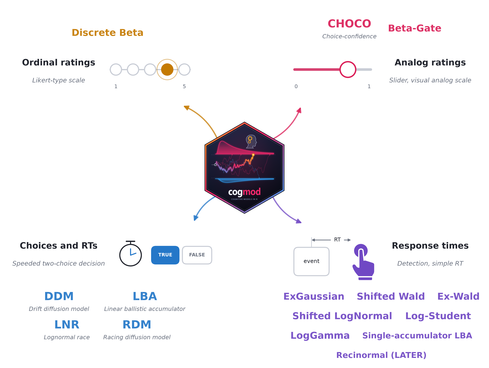

Models of Cognition for Subjective Scales and Decision Making Tasks in R
This R package is dedicated to facilitate the application of computational models of cognition in R under a Bayesian framework. These are useful in the field of cognitive science and computational neuropsycholology.
If you have suggestions for improvement, please get in touch! See also this related attempt at creating tutorials.
Features
-
Models for Subjective Ratings Data (Likert/Slider Scales)
-
Models for Reaction Times
-
Models for Decision Making (Choice + RT)

_stanvars() function supplying its Stan code, and with d*() and r*() functions for density evaluation and simulation.What are Computational Cognitive Models?
Measures from cognitive tasks, such as decision-making paradigms involving fast responses or ratings, often produce noisy, specific, and complex patterns of results. Broadly speaking, there are three ways of analysing such data.
- The Summary Statistics Approach: The traditional approach often involves not bothering with any of the distinctive characteristics of cognitive data, assume that observations are Normally distributed, and summarise them using simple statistics such as means (which is what linear models do). This is the approach underlying most t-tests, ANOVAs, and linear regression models. Although often convenient, these methods may provide a poor description of the data and offer only limited insight into the cognitive processes that generated the observations.
- The Distributional Approach: A more principled approach is to choose statistical models that better account for these particular distributions. This can involve transforming the data (for example, log-transforming reaction times so that linear models are more justified), using robust statistical methods (resilient to non-normality), or adopting more appropriate probability distributions (e.g., using Ex-Gaussian models for RTs). While these approaches often improve model fit and statistical inference, there can be a gap between the descriptive distributional parameters estimated and the cognitive mechanisms underlying the data generation process.
- The Computational Approach: The most recent approach is to use models that are specifically designed to approximate or account for the cognitive processes at stake. For instance, Evidence Accumulation Models conceptualize response time as the outcome of a noisy process of evidence accumulation in the brain. And Choice-Confidence models explain the bi-modal distributions often found with slider scales as the combination of a dual-process of discrete choice and continuous evaluation. These models combine a good distributional fit to the data with more meaningful and cognitively interpretable parameters.

Installation
if (!requireNamespace("remotes", quietly = TRUE)) install.packages("remotes")
remotes::install_github("DominiqueMakowski/cogmod")Usage
using a cogmod model requires two arguments beyond a standard brm() call: family and stanvars. Two further helpers, cogmod_priors() and cogmod_inits(), are strictly speaking optional but should be treated as part of the call: they provide adapted chain-initialization values and weakly informative priors on the sensitive parameters to limit convergence issues and other sampling pathologies.
library(cogmod)
library(brms)
# Specify the formula using brms' bf()
f <- bf(
RT ~ Condition,
sigma ~ Condition,
ndt ~ Condition,
family = cogmod_lognormal()
)
# Fit the model
m <- brm(
f,
data = df,
prior = cogmod_priors(f, df),
init = cogmod_inits(f, df),
stanvars = cogmod_stanvars(f),
backend = "cmdstanr"
)We can then analyze its results, and check its predictions like with any other models. See the Subjective Ratings, RT-only Models, and Decision Making Models vignettes for more detailed examples.